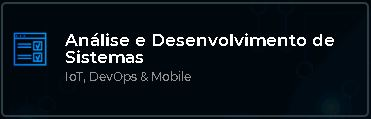

Banco de Dados
O Curso Tecnólogo em Banco de Dados atua em um segmento da área de informática que abrange a administração dos recursos de infraestrutura lógica dos ambientes informatizados...
Redes de Computadores
O Curso Tecnólogo em Redes de Computadores atua em um segmento da área de informática que abrange a administração dos recursos de infraestrutura lógica dos ambientes informatizados...

Análise e Desenvolvimento de Sistemas
O Curso Tecnológico de Análise e Desenvolvimento de sistemas oferece uma formação sólida em desenvolvimento de sistemas, gerando conhecimento científico e inovação e que os incentivem a estender suas competências à medida que a área se desenvolva...